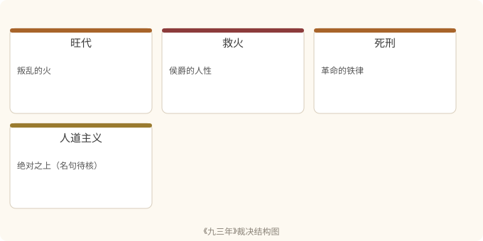

九三年
一、基本信息
| 作者 | 雨果 |
|---|---|
| 成书/出版 | 1874年（作者页 B040/B015 口径：九三年（1874）） Victor Hugo — Encyclopaedia Britannica（百科全书） |
| 国别/地区 | 法国 |
| 时代 | 近代 · 19世纪 |
| 体裁 | 长篇小说 |
| 语言 | 法语 |

《九三年》裁决结构图（主题·结构图）
二、创作背景
作者页（B040/B015）：雨果 major_works 载'九三年（1874）'——其最后一部长篇（B040 作者页定位，详见 balimingwuyuan/beican 条核对）。
题材（通说待核）：1793年旺代叛乱——革命与人性冲突的最后裁决。
三、内容脉络
三个孩子的人质——朗德纳克侯爵返身救人被捕（通说待核）。
郭文的死刑与西穆尔丹的自尽（通说待核）。
四、主要人物表
| 人物 | 身份 | 说明 |
|---|---|---|
| 朗德纳克 | 叛军统帅 | 救火中的人性（通说待核） |
| 郭文 | 革命军司令 | 宽恕的选择（通说待核） |
| 西穆尔丹 | 政委 | 铁的纪律（通说待核） |
五、主题与艺术特点
- 革命与人性：'在绝对正确的革命之上，还有一个绝对正确的人道主义'（名句通说待核）。
- 旺代战争的史实（通说待核）。
- 雨果的裁决（通说）。
六、影响与评论
- 作者页：雨果晚期代表作（B040/B015 作者页口径）。
Victor Hugo — Encyclopaedia Britannica（百科全书） - 法国中学经典书目（通说待核）。
Victor Hugo — Encyclopaedia Britannica（百科全书）
七、阅读建议
难点
- 旺代战争史。
- 革命伦理的思辨。
- 《九三年》（人民文学出版社郑永慧译本，通说待核）。
- 法文原版（公有领域）。
雨果三部曲：《巴黎圣母院》《悲惨世界》《九三年》。
八、待核实
- 1874年出版核对。
- 朗德纳克/郭文/西穆尔丹人名核对。
- 名句原文核对。